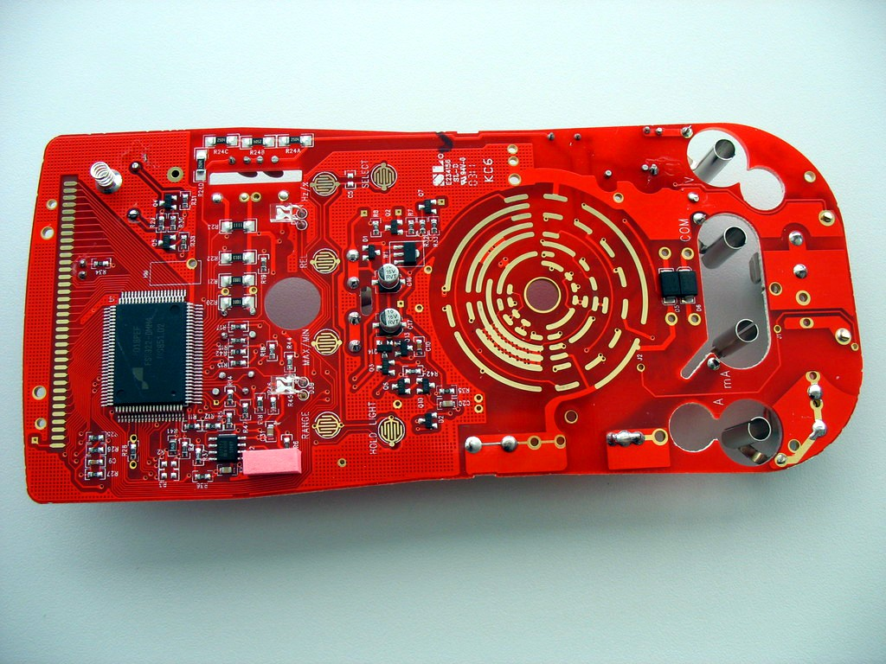
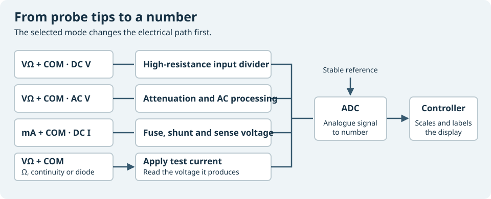

How a digital multimeter works
Follow the signal from the probe tips to the display. The same divider and resistor laws you used on the breadboard explain most meter modes.
Find the jacks, selector and chip


Photo by Uwe Hermann. Original photo · CC BY-SA 2.0.
.jpg){kind=link}
The Teenage Engineer · How to use a digital multimeter, and teardown of the Ames DM600. At about 11:20, follow the current-shunt explanation. Later, look for the current fuse and selector on the opened meter. The Ames DM600’s layout differs from the UT61D above.


DC volts use a high-resistance input
The meter reads red relative to COM. A precision divider scales the voltage to a range the converter can accept. For example, a 9 MΩ resistor over 1 MΩ gives a 10 MΩ input. A 4.50 V battery puts 0.450 V across the lower resistor in this simplified circuit. The meter applies the divider ratio so the display reads 4.50 V. Reversing the probes reverses the sign.
The input resistance also sits in parallel with what you measure. Put two 1 MΩ resistors in series on a 4.50 V battery. The untouched midpoint is 2.25 V. Across the lower resistor, a 10 MΩ meter reads about 2.14 V, and a 1 MΩ meter about 1.50 V. If you already have these resistors, repeat with 1 kΩ in both positions. The readings should be much closer to half the battery voltage. Use your actual battery voltage and the input impedance from your meter’s manual. T24 · How to calculate loading.
Current uses a shunt and a fuse
The circuit current flows through a small, known resistance called a shunt. For example, 8.0 mA through a 10 Ω shunt drops 80 mV. The meter uses I = V/R and shows milliamps. The drop across the shunt, fuse and connections is called burden voltage. That extra series voltage drop can lower the current you intended to measure.
That low-resistance path explains why the A or mA input is used in series. If you put a current input across a source it can short the source. When finished, switch the circuit off and return the red lead to VΩ. Use the fuse part specified in the manual. Its voltage rating and breaking capacity matter along with its amp rating.
Ohms, continuity and diode mode supply a test signal
For a resistance test the meter typically supplies a known current and measures the resulting voltage. If 100 µA produces 0.100 V, R = V/I gives 1.00 kΩ. In continuity mode the meter compares the result with its own beep threshold. A beep shows there is a conductive path at the meter’s small test current.
Diode mode also applies a small test current and displays the forward voltage. On a loose silicon diode, one direction may show 0.6 V and the other OL. An LED can need more voltage than your meter supplies, so check the manual before diagnosing it from OL. For all three tests disconnect external power, discharge stored energy safely and isolate a part if parallel paths could change the result.
AC processing and the converter
An average-responding meter can rectify the waveform, average it and scale the result to RMS for a clean sine wave. A true-RMS meter measures effective voltage within its bandwidth, crest factor and range limits. The circuitry may compute RMS from samples or produce a related DC signal before conversion. An AC-only mode usually excludes any DC offset. A 6.0 V RMS sine wave peaks at about 8.5 V.
An analogue-to-digital converter (ADC) compares the conditioned signal with a stable reference and reports a number. The controller applies calibration and the selected range, then puts the decimal point and units on the display. Auto-ranging switches internal paths to keep the signal within useful bounds. Some precision meters integrate over time to reject noise. For a real design, the Keysight 34401A service guide describes its multislope converter and analogue front end. Keysight · Meter block diagram · Keysight · 34401A service guide.
Display resolution is the size of the last step. Accuracy additionally includes specified errors. A range with 0.01 V steps and ±(0.5% of reading + 2 counts) permits about ±0.043 V at 4.50 V under its stated conditions.
Protection depends on where you measure
Meter protection can include current fuses, voltage input clamps and components that limit surge energy. Board spacing and the case help contain faults. A range printed as 600 V describes a voltage limit. A measurement category such as CAT III 600 V also describes a tested environment for transients. The leads, tips, adapters and instrument all count. See the actual manufacturer documentation for the measurement and use. Fluke · Multimeter safety and measurement categories.
P03 · Check these ideas on the battery circuit